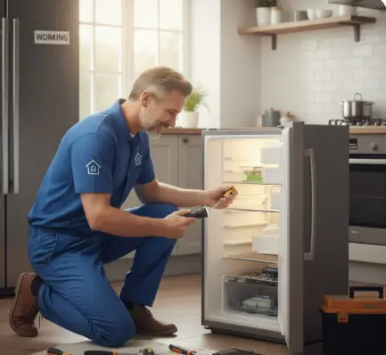

أهم إجراءات الوقاية لإطالة عمر الأجهزة المنزلية
تعتبر العناية بالأجهزة المنزلية استثمارًا ذكيًا يضمن لك كفاءة الأداء ويوفر عليك تكاليف الإصلاحات المفاجئة، إن تبني إجراءات بسيطة ومنتظمة لا يطيل من عمر أجهزتك فحسب، بل يضمن أيضًا عملها بأمان وفعالية.
من خلال هذا الدليل، سنقدم لك أهم الخطوات العملية التي تساعدك في الحفاظ على أجهزتك، حيث أن فهم أساسيات وقاية الأجهزة المنزلية هو خطوتك الأولى نحو تجنب الأعطال الشائعة وضمان استمرارية عملها لسنوات طويلة. فمع القليل من الاهتمام، ستظل أجهزتك شريكًا يُعتمد عليه في منزلك.
هل تلاحظ أصواتًا غريبة من ثلاجتك أو أداءً ضعيفًا لغسالتك؟
لا تنتظر حتى تتفاقم المشكلة، تواصل مع خبراء مدير التوكيل لإعادة أجهزتك إلى أفضل حالاتها من خلال خدماتنا المتخصصة في صيانة الأجهزة المنزلية.
ما هي أهمية الصيانة الدورية للأجهزة المنزلية؟
تكمن أهمية الصيانة الدورية للأجهزة المنزلية في كونها خطوة استباقية تضمن استمرارية عمل الأجهزة بكفاءة عالية وتطيل من عمرها الافتراضي، حيث أنه:
- من خلال الفحص المنتظم، يمكن اكتشاف المشكلات البسيطة قبل تفاقمها، مما يوفر تكاليف الإصلاحات الكبيرة أو الحاجة لاستبدال الجهاز بالكامل.
- كما تساهم الصيانة في تقليل استهلاك الطاقة، حيث أن الأجهزة التي تعمل بشكل جيد تستهلك طاقة أقل، مما ينعكس إيجابًا على فواتير الكهرباء.
- وكذلك تضمن الصيانة الدورية جانبًا حيويًا وهو الأمان، حيث يتم التأكد من سلامة التوصيلات الكهربائية وعدم وجود تسريبات قد تشكل خطرًا على أفراد الأسرة.
حلول وقاية الأجهزة المنزلية
لضمان عمل أجهزتك المنزلية بكفاءة لأطول فترة ممكنة، تعد الوقاية هي الحل الأمثل، تبدأ هذه العملية بالالتزام بتعليمات الشركة المصنعة الموجودة في دليل الاستخدام، حيث يوضح الطرق الصحيحة للتشغيل والصيانة.
التنظيف المنتظم للأجهزة من الداخل والخارج يمنع تراكم الأتربة والرواسب التي قد تؤثر سلبًا على أدائها. كذلك، من الضروري التأكد من استقرار التيار الكهربائي واستخدام منظمات الجهد لحماية الأجهزة من التلف الناتج عن التقلبات المفاجئة في الكهرباء.
الإجراءات الوقائية الأساسية:
- التنظيف الدوري: احرص على تنظيف فلاتر المكيفات والغسالات، وملفات المكثف في الثلاجات بشكل منتظم.
- فحص التوصيلات: تأكد من سلامة الأسلاك والكابلات الكهربائية وعدم وجود أي تلف بها.
- الاستخدام الصحيح: تجنب تحميل الأجهزة فوق طاقتها، مثل وضع كميات ملابس تفوق سعة الغسالة.
- التهوية الجيدة: وفر مساحة كافية حول الأجهزة، خاصة الثلاجات والأفران، لضمان تهوية جيدة ومنع ارتفاع حرارتها.
أفضل 10 طرق لإطالة عمر الثلاجة
تعتبر الثلاجة من الأجهزة التي تعمل بشكل متواصل، والعناية بها تضمن استمراريتها وكفاءتها. للحفاظ عليها، اتبع هذه الطرق:
- تنظيف ملفات المكثف: نظّف الملفات الموجودة خلف الثلاجة أو أسفلها كل ستة أشهر على الأقل للتخلص من الغبار الذي يعيق عملية التبريد.
- ضبط درجة الحرارة المثالية: حافظ على درجة حرارة الثلاجة بين 2 و5 درجات مئوية، والفريزر عند -18 درجة مئوية لتحقيق أفضل كفاءة.
- فحص إطار الباب: تأكد من أن إطار الباب المطاطي (الجوان) يغلق بإحكام لمنع تسرب الهواء البارد، وقم بتنظيفه أو استبداله إذا لزم الأمر.
- ترك مساحة للتهوية: اترك مسافة كافية حول الثلاجة لضمان تدفق الهواء بشكل جيد، مما يقلل الضغط على المحرك.
- عدم تكديس الأطعمة: تجنب ملء الثلاجة بشكل زائد للسماح للهواء البارد بالدوران بحرية بين الأطعمة.
- تبريد الطعام قبل وضعه: لا تضع الأطعمة الساخنة مباشرة في الثلاجة، بل اتركها تبرد أولاً لتقليل الجهد على نظام التبريد.
- التنظيف الداخلي المنتظم: نظّف الثلاجة من الداخل بانتظام باستخدام محلول من الماء الدافئ وبيكربونات الصوديوم.
- إذابة الثلج المتراكم: في الثلاجات التي لا تحتوي على خاصية “نو فروست”، قم بإذابة الثلج يدويًا عند تراكمه لمنع التأثير على كفاءة التبريد.
- الحفاظ على مستوى الثلاجة: تأكد من أن الثلاجة موضوعة على سطح مستوٍ تمامًا لضمان عمل المحرك بشكل سليم.
- فصل التيار عند السفر: إذا كنت ستغيب لفترة طويلة، قم بإفراغ الثلاجة وتنظيفها وفصلها عن الكهرباء.
كيف تحمي أجهزتك من الصدأ والتآكل؟
يعد الصدأ والتآكل من أهم المشاكل التي تؤثر على عمر الأجهزة المنزلية، خاصة تلك الموجودة في بيئات رطبة مثل المطابخ والحمامات. لحمايتها، يجب الحفاظ على جفاف الأسطح الخارجية باستمرار وتجفيف أي مياه أو سوائل تنسكب عليها فورًا.
يمكن استخدام مواد تنظيف مخصصة للفولاذ المقاوم للصدأ لتكوين طبقة واقية. كما يُنصح بتوفير تهوية جيدة في الأماكن التي توجد بها الأجهزة لتقليل نسبة الرطوبة في الهواء، والتي تعد السبب الرئيسي لتكون الصدأ.
طرق التخلص من الروائح الكريهة في الثلاجة والغسالة
في الثلاجة:
للتخلص من الروائح الكريهة في الثلاجة، ابدأ بتنظيف شامل وإزالة أي أطعمة فاسدة. استخدم محلولًا من الماء الدافئ وبيكربونات الصوديوم لمسح الأرفف والجدران الداخلية. لامتصاص الروائح المستمرة، يمكن وضع وعاء مفتوح يحتوي على بيكربونات الصوديوم، أو بعض من حبوب القهوة المطحونة، أو قطعة من الفحم النشط داخل الثلاجة.
في الغسالة:
تنتج الروائح في الغسالة عادةً عن تراكم بقايا المنظفات والعفن في الأجزاء المطاطية أو الفلتر. للتخلص منها، قم بتشغيل دورة غسيل فارغة على درجة حرارة عالية باستخدام كوب من الخل الأبيض أو منظف مخصص للغسالات. لا تنس تنظيف الإطار المطاطي حول الباب وتجفيفه جيدًا بعد كل استخدام، وترك الباب مفتوحًا قليلاً للسماح بالتهوية.
متى يجب عليك استدعاء فني صيانة محترف؟
على الرغم من أن الصيانة الدورية البسيطة يمكن القيام بها بنفسك، إلا أن هناك حالات تتطلب تدخل فني متخصص لتجنب تفاقم المشكلة أو التسبب في ضرر أكبر. يجب عليك الاتصال بفني محترف فورًا عند ملاحظة أي من العلامات التالية:
- أصوات غريبة وغير معتادة: إذا بدأ جهازك في إصدار أصوات طنين أو صرير أو طرق لم تكن موجودة من قبل.
- تسريب المياه أو الغاز: أي تسريب، مهما كان بسيطًا، يعد علامة خطر تتطلب تدخلاً فوريًا.
- تغيرات ملحوظة في الأداء: مثل عدم تبريد الثلاجة بشكل كافٍ، أو عدم تسخين الفرن لدرجة الحرارة المطلوبة.
- مشاكل كهربائية: إذا كان الجهاز يتوقف عن العمل فجأة، أو لاحظت شررًا عند تشغيله، أو رائحة حريق.
- ارتفاع غير مبرر في فواتير الطاقة: قد يشير ذلك إلى أن أحد الأجهزة يعمل بجهد أكبر من اللازم بسبب عطل داخلي.
جهازك محتاج فحص؟
لا تدع أعطال الأجهزة المنزلية المفاجئة تعطل سير يومك. تواصل مع مدير التوكيل للاستفسار عن الخدمة المناسبة لجهازك.
أسئلة شائعة
هل يؤثر استخدام وصلات كهربائية طويلة على الأجهزة الكبيرة؟
نعم، خاصة مع الأجهزة التي تستهلك طاقة عالية كالثلاجات والغسالات. الوصلات الطويلة أو ذات الجودة المنخفضة قد لا تتحمل الحمل الكهربائي، مما يسبب سخونة زائدة وقد يؤدي إلى تلف محرك الجهاز. الأفضل دائمًا توصيل الأجهزة الكبيرة مباشرة بمقبس الحائط.
هل من الآمن استخدام منظفات منزلية الصنع لغسالة الأطباق؟
على الرغم من أن بعض المواد مثل الخل قد تساعد في التنظيف، إلا أن استخدام منظفات منزلية غير مخصصة قد يتلف الأجزاء الداخلية والأختام المطاطية لغسالة الأطباق. من الأفضل استخدام المنظفات الموصى بها من الشركة المصنعة لضمان عدم حدوث أي ضرر.
هل يؤثر مكان وضع الميكروويف على أدائه؟
بالتأكيد. يجب التأكد من وجود مساحة كافية حول الميكروويف لضمان تهوية جيدة، خاصة حول فتحات التهوية. وضعه في مكان مغلق أو ضيق يمنع تصريف الحرارة، مما قد يسبب سخونة زائدة للجهاز ويقلل من عمره الافتراضي وكفاءته.
مقالات مرتبطة
هل تواجه مشكلة أو عطلاً في جهازك؟
تواصل مع فريق "مدير التوكيل" الآن للحصول على استشارة فنية وفحص منزلي فوري بأعلى معايير الدقة والأمان.